CODES / fit / svm
Train a Support Vector Machine
Contents
Syntax
- svm=CODES.fit.svm(x,y) builds an svm based on the training set (x,y).
- svm=CODES.fit.svm(...,param,value) uses a list of parameters param and values value (c.f., parameter table).
Description
Support Vector Machine (SVM) is a machine learning classification tool. Its core idea relies on the definition of an optimal decision function. In the linear case, the decision function is a hyper-plane which is defined through the following quadratic optimization problem:
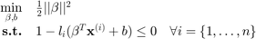
where 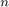 is the number of training samples, and the optimal separating plane is defined as 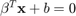. The constant 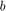 (sometimes referred to as 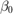) is called the bias, 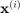 is the 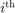 training sample, and 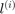 the label. As per convention, labels derive from function values 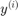 such that:
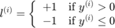
Note: in the case of a response 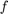, and a threshold 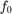, the classification is performed on the sign of a limit state function 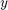 defined as 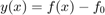 or 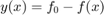.
In the case of non-separable data, the optimization problem is infeasible and needs to be relaxed. This is done through the introduction of slack variables 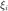:
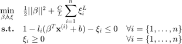
where 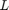 is either 1 or 2 and represents the loss function used. In the remainder of this help, 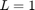 (L1 SVM) is used but can be easily extended to L2 SVM. Using Karush-Kuhn-Tucker conditions, one can show that:
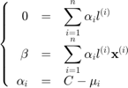
where 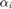 and 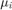 are the Lagrange multiplier associated to the first and second set of constraints,respectively. This leads to the dual problem:
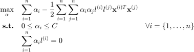
Finally, the so-called kernel trick consists in recognizing that the scalar product 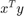 could be replaced by a kernel function 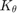 of parameter 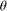 such that the dual problem becomes:
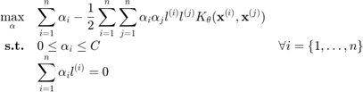
For an in-depth discussion of Support Vector Machine and Machine Learning, the interested reader is referred to Vapnik (2000).
Slack variables, bias, Lagrange multipliers, and indices of the support vectors can be obtained using: svm.xis, svm.bias, svm.alphas, and svm.SVs.
Kernels
Two kernels are available:
- Linear:
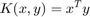
- Gaussian:
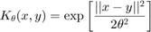
Solvers
Three solvers are implemented:
- Primal (linear kernel only), uses quadprog to solve:
Ideas to extend the primal solver can be found in Chapelle (2007).
- Dual, uses quadprog to solve:
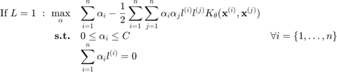
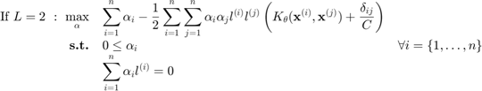
- libSVM, presented in Chang and Lin (2011) uses an extremly efficient SMO-type algorithm to solve the dual formulation.
Weighted formulation
Osuna et al. (1997) and Vapnik (2000) introduced different cost coefficients (i.e., weights) for the different classes in the SVM formulation. The corresponding linear formulation is:
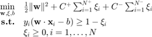
where 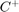 and 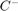 are cost coefficients for the +1 and -1 classes respectively. 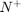 and 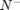 are the number of samples from +1 and -1 classes. The coefficients are typically chosen as (Chang and Lin, 2011):
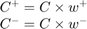
where 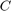 is the common cost coefficient for both classes, 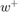 and 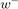 are the weights for +1 and -1 class respectively. The weights are typically chosen as:
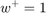
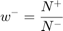
Training Options
| param | value | Description |
|---|---|---|
| 'scale' | {'square'}, 'circle', 'none' | Define scaling method for the inputs (c.f., Scaling for details) |
| 'UseParallel' | logical, {false} | Switch to use parallel settings |
| 'theta' | numeric, { [ ] } | Value for kernel parameter. If [ ], should be calibrated. |
| 'kernel' | {'gauss'}, 'lin' | Kernel type, see Kernels. |
| 'solver' | {'libsvm'}, 'dual', 'primal' | Type of solver to use to solve the SVM optimization problem, see Solvers. |
| 'loss' | {1}, 2 | Loss function. |
| 'C' | positive numeric, { [ ] } | Cost parameter. If [ ], should be calibrated. |
| 'weight' | logical, {false} | If true, train weighted SVM, see Weighted formulation. |
| 'w_plus' | numeric, {1} | Weight for +1 samples. If default and 'weight' is true, weight computed based on sample imbalance. |
| 'w_minus' | numeric, {1} | Weight for -1 samples. If default and 'weight' is true, weight computed based on sample imbalance. |
| 'param_select' |
|
Kernel parameter calibration strategy, see svm (parameters selection). Kernel parameters are optimized such that they either minimize (maximize in the case of the AUC) the elected metric or satisfy some heuristic ('fast' or 'stiffest'). |
Evaluation and Post-Processing
 |
Capabilities of an svm object. |
Mini tutorials
|
A mini tutorial of the capabilities of the svm class. |
|
A presentation of parameters selection techniques for svm. |
|
An illustration of the svm path. |
References
- Osuna et al. (1997): Osuna E., Freund R., Girosi F., (1997) Support vector machines: Training and applications.
- Vapnik (2000): Vapnik V., (2000) The nature of statistical learning theory. Springer
- Chapelle (2007): Chapelle O., (2010) Training a support vector machine in the primal. Neural Computation, 19(5)1155-1178 - DOI
- Chang and Lin (2011): Chang C.C., Lin C.J., (2011) LIBSVM : a library for support vector machines. ACM Transactions on Intelligent Systems and Technology, 2(3):1-27. Software
Copyright © 2015 Computational Optimal Design of Engineering Systems (CODES) Laboratory. University of Arizona.
|
|
Computational Optimal Design of Engineering Systems |

|